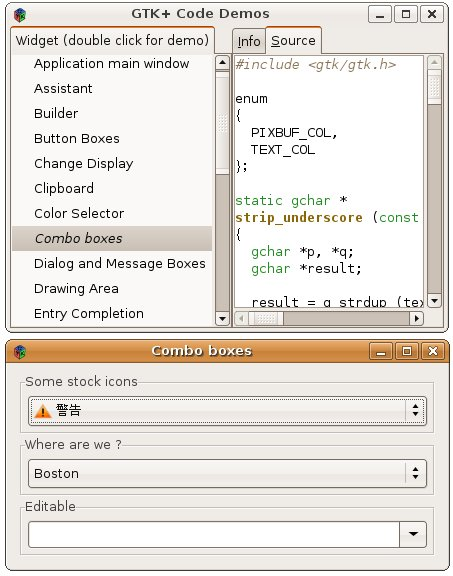

| 在
學習GTK的過程當中，所需的學習文件，可以在 GTK
官方網站 的 Documentation
中找到一些，其中推薦先看： 其中若要查詢API，可以看： 善用網頁右上方搜尋框，可以節省不少搜尋函式或類別說明的時間，而由 GTK 的物件導向架構 中可以了解到，GTK 在架構上運用了一些方式，使得使用GTK時可以支援許多物件導向的概念，而在API文件上，也是按照這樣的架構來撰寫，例如在函式的組織上，與 GtkWindow相關的函式，都是以gtk_window名稱作為開頭，若您想設定或操作GtkWindow，查詢GtkWindow文件通常可以找到 解答。 如果您需要參考GTK的範例程式，在Ubuntu下可以執行以下指令安裝： sudo apt-get install gtk2.0-examples
安裝完成後，您可以執行以下指令叫出GTK範例的展示視窗： gtk-demo
您可以直接在有興趣的範例項目上按兩下以執行範例，並可觀看範例程式碼：  |